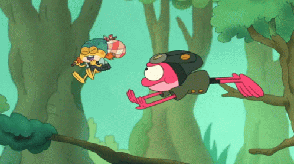
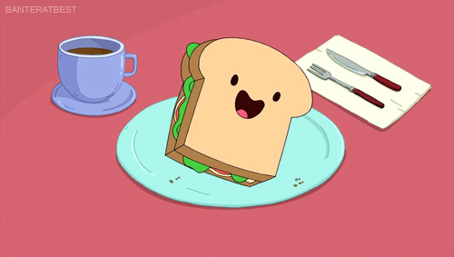
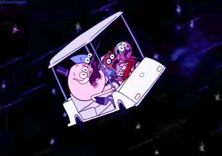

Hi, I'm Vibhor!

Hi! I am a developer exploring the awesome corners of the internet in search of inspiration and cool stuff. Scripts, tools & games excite me and so I'm always jumping from idea to idea. I also have a soft spot for retro tech and the good ol' command-line.
Projects


On My Way Up
A vertical platformer game where you play as a frog and dodge crazy obstacles to reach the top.
View RepositoryTelco Churn Predictor
A minimalistic telco customer churn predictor powered by an ML model and beautified with React & Chart.
View Website

Cafe Omega
A UI/UX project to learn responsive eCommerce web-design, built with Remix & Tailwind.
View Website

Asteroids
My first vanilla JavaScript game, inspired from the Atari classic with the same name.
Play Asteroids